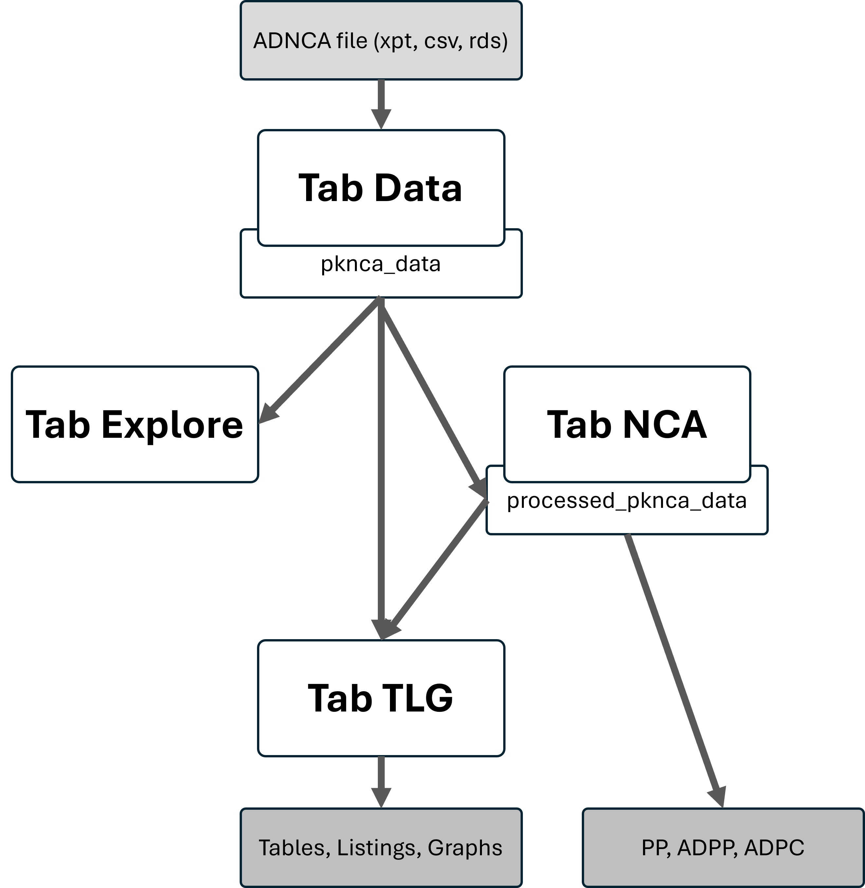

The design of the R package provides high-level functions based on the PKNCA package, allowing the conversion of a standard CDISC ADNCA file into a PKNCAdata object. Within this package, we use a Shiny environment that simplifies this process for our non-programmer users by providing a user interface for every programmatic decision. Additionally, the App simplifies the exploration of outputs and the investigation of the data (Quality control, exclusion of records, filtering…).
1. Folder structure
This diagram represents the high-level architecture and data flow within the aNCA package and Shiny application.
aNCA Shiny App Architecture
├── Main Components and Responsibilities
│ ├── R package Functions (`R/`)
│ │ ├── Core NCA helpers
│ │ └── Mapping and validation logic (`apply_mapping.R`)
│ │
│ ├── Shiny App (`inst/shiny/`)
│ │ ├── `app.R` (Main entry point for the app)
│ │ ├── UI Modules and Server Logic
│ │ │ ├── Module Files: `inst/shiny/modules/{tab_data, tab_explore, tab_nca, tab_tlg}.R/`
│ │ │ ├── Tab Data Submodules: `inst/shiny/modules/tab_data/`
│ │ │ ├── Tab Explore Submodules: `inst/shiny/modules/tab_explore/`
│ │ │ ├── Tab NCA Submodules: `inst/shiny/modules/tab_nca/`
│ │ │ └── Tab TLG Submodules: `inst/shiny/modules/tab_tlg/`
| | |
│ │ ├── Shiny end-to-end tests: `inst/shiny/tests/`
| │ |
│ │ └── Session wiring: Connection logic for tabs and modules
│ │
│ ├── Documentation (`documentation/`)
│ │ ├── User Guide (website): `vignettes/`
│ │ ├── Static Documentation Site: `pkgdown/` configuration + `docs/`
│ │ ├── System Validation Files: `documentation/`
│ │ └── General Architecture Descriptions: `documentation/`
│ │
│ └── Testing (`tests/`)
│ └── Unit Tests for `R/`: `tests/testthat/`
│
└── --- End of Architecture ---2. Data flow
Tab Overview
-
Data Tab: Data upload (CSV, RDS, XPT, parquet)
& preprocessing. Creation of PKNCAdata object
(
pknca_data) - Explore Tab: Uses the PKNCAdata object to produce data exploration plots
-
NCA Tab: Modification of PKNCAdata object to apply
all NCA settings (
processed_pknca_data) and run calculations to obtain PKNCAresults object (res_nca) -
TLG Tab: Generation of tables, listings, and graphs
from
processed_pknca_data(and at some pointres_nca). Standard Shiny input settings are specified ininst/shiny/tlg.yaml
Transformations
- Filters, mapping, unit handling, imputation rules, PKNCA object creation
- Intermediate state is stored in
session$userDatain Shiny The high level picture of the App, which is shown in App.R, can be summarized on a diagram where:

For better details on the server lower level processing actions
(order of functions in /R), check directly the .../R_script_template.R - yet not available
3. Session & state management
- In
session$userData$resultswe store all objects that are intended for the ZIP folder output (mappings, settings, units_table, ratios_table, etc.). - In
session$userDatawe also store intermediate objects (e.g.,pknca_data,processed_data, etc.) that are used across tabs.
4. See also…
- Roadmap with the next year goals - Indicating the objectives planned to be achieved.
- Validation Plan and Coverage - Describing the validation strategy implemented and the ideas for the future.
- governance.md - Describing the project’s management style.